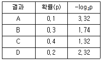
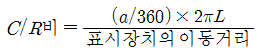
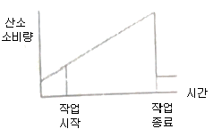
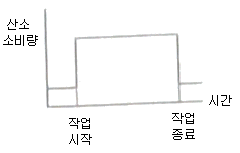
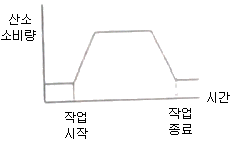
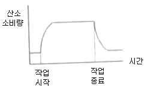
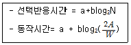
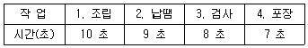

인간공학기사 (2021-03-07 기출문제)
1과목: 인간공학개론
1. 시각 및 시각과정에 대한 설명으로 옳지 않은 것은?
- 원추체(cone)는 황반(fovea)에 집중되어 있다.
- 멀리 있는 물체를 볼 때는 수정체가 두꺼워진다.
- 동공(pupil)의 크기는 어두우면 커진다.
- 근시는 수정체가 두꺼워져 원점이 너무 가까워진다.
(정답률: 78%)

2. 시식별에 영향을 주는 인자로 적합하지 않은 것은?
- 조도
- 휘도비
- 대비
- 온·습도
(정답률: 89%)
3. 실제 사용자들의 행동 분석을 위해 사용자가 생활하는 자연스러운 생활환경에서 조사하는 사용성 평가기법으로 옳은 것은?
- Heuristic Evaluation
- Usability Lab Testing
- Focus Group Interview
- Observation Ethnography
(정답률: 70%)
4. 인체의 감각기능 중 후각에 대한 설명으로 옳은 것은?
- 후각에 대한 순응은 느린 편이다.
- 후각은 훈련을 통해 식별능력을 기르지 못한다.
- 후각은 냄새 존재 여부보다 특정 자극을 식별하는데 효과적이다.
- 특정 냄새의 절대 식별 능력은 떨어지나 상대적 비교능력은 우수한 편이다.
(정답률: 78%)
5. 제어장치가 가지는 저항의 종류에 포함되지 않는 것은?
- 탄성 저항(elastic resistance)
- 관성 저항(inertia resistance)
- 점성 저항(viscous resistance)
- 시스템 저항(system resistance)
(정답률: 68%)
6. 음 세기(sound intensity)에 관한 설명으로 옳은 것은?
- 음 세기의 단위는 Hz 이다.
- 음 세기는 소리의 고저와 관련이 있다.
- 음 세기는 단위시간에 단위면적을 통과하는 음의 에너지를 말한다.
- 음압수준(sound pressure level) 측정 시 주로 1000Hz 순음을 기준 음압으로 사용한다.
(정답률: 71%)
7. 시스템의 사용성 검증 시 고려되어야할 변인이 아닌 것은?
- 경제성
- 낮은 에러율
- 효율성
- 기억용이성
(정답률: 74%)
8. 암호체계의 사용에 관한 일반적 지침에서 암호의 변별성에 대한 설명으로 옳은 것은?
- 정보를 암호화한 자극은 검출이 가능하여야 한다.
- 자극과 반응 간의 관계가 인간의 기대와 모순되지 않아야 한다.
- 두 가지 이상의 암호 차원을 조합하여 사용하면 정보전달이 촉진된다.
- 모든 암호표시는 감지장치에 의하여 다른 암호 표시와 구별될 수 있어야 한다.
(정답률: 75%)
9. 주의(attention)의 종류에 포함되지 않는 것은?
- 병렬주의(parallel attention)
- 분할주의(divided attention)
- 초점주의(focused attention)
- 선택적 주의(selective attention)
(정답률: 59%)
10. 인간공학에 관한 내용으로 옳지 않은 것은?
- 인간의 특성 및 한계를 고려한다.
- 인간을 기계와 작업에 맞추는 학문이다.
- 인간 활동의 최적화를 연구하는 학문이다.
- 편리성, 안정성, 효율성을 제고하는 학문이다.
(정답률: 91%)
11. 움직이는 몸의 동작을 측정한 인체치수를 무엇이라고 하는가?
- 조절 치수
- 파악한계 치수
- 구조적 인체치수
- 기능적 인체치수
(정답률: 84%)
12. 인간의 기억 체계에 대한 설명으로 옳지 않은 것은?
- 단위시간당 영구 보관할 수 있는 정보량은 7bit/sec이다.
- 감각 저장(sensory storage)에서는 정보의 코드화가 이루어지지 않는다.
- 장기 기억(long-term memory)내의 정보는 의미적으로 코드화된 정보이다.
- 작업 기억(working memory)은 현재 또는 최근의 정보를 잠시 동안 기억하기 위한 저장소의 역할을 한다.
(정답률: 75%)
13. 인체측정 자료의 최대 집단 값에 의한 설계 원칙에 관한 내용으로 옳은 것은?
- 통상 1, 5, 10%의 하위 백분위수를 기준으로 정한다.
- 통상 70, 75, 80%의 상위 배분위수를 기준으로 정한다.
- 문, 탈출구, 통로 등과 같은 공간의 여유를 정할 때 사용한다.
- 선반의 높이, 조정 장치까지의 거리 등을 정할 때 사용한다.
(정답률: 82%)
14. 다음과 같은 확률로 발생하는 4가지 대안에 대한 중복률(%)은 얼마인가?

- 1.8
- 2.0
- 7.7
- 8.7
(정답률: 44%)
15. 인간-기계 체계(Man-Mchine System)의 신뢰도(RS)가 0.85 이상 이어야 한다. 이때 인간의 신뢰도(RH)가 0.9 라면 기계의 신뢰도(RE)는 얼마 이상이어야 하는가? (단, 인간-기계 체계는 직렬체계이다.)
- RE ≥ 0.831
- RE ≥ 0.877
- RE ≥ 0.915
- RE ≥ 0.944
(정답률: 54%)
16. 선형 표시장치를 움직이는 조종구(레버)에서의 C/R 비를 나타내는 다음 식에서 변수 a의 의미로 옳은 것은? (단, L은 컨트롤러의 길이를 의미한다.)

- 조종장치의 여유율
- 조종장치의 최대 각도
- 조종장치가 움직인 각도
- 조종장치가 움직인 거리
(정답률: 77%)
17. 신호 검출 이론(signal detection theory)에서 판정기준을 나타내는 우도비(likelihood ratio)β와 민감도(sensitivity) d에 대한 설명으로 옳은 것은?
- β가 클수록 보수적이고, d가 클수록 민감함을 나타낸다.
- β가 클수록 보수적이고, d가 클수록 둔감함을 나타낸다.
- β가 작을수록 보수적이고, d가 클수록 민감함을 나타낸다.
- β가 작을수록 보수적이고, d가 클수록 둔감함을 나타낸다.
(정답률: 74%)
18. 정량적 표시장치의 지침(pointer) 설계에 있어 일반적인 요령으로 적합하지 않은 것은?
- 뾰족한 지침을 사용한다.
- 지침을 눈금면과 최대한 밀착시킨다.
- 지침의 끝은 최소 눈금선과 맞닿고 겹치게 한다.
- 원형눈금의 경우 지침의 색은 지침 끝에서 중앙까지 칠한다.
(정답률: 69%)
19. 표시장치와 제어장치를 포함하는 작업장을 설계할 때 고려해야할 사항과 가장 거리가 먼 것은?
- 작업시간
- 제어장치와 표시장치와의 관계
- 주 시각 임무와 상호작용하는 주제어장치
- 자주 사용되는 부품을 편리한 위치에 배치
(정답률: 70%)
20. 통화 이해도 측정을 위한 척도로 적합하지 않은 것은?
- 명료도 지수
- 인식 소음 수준
- 이해도 점수
- 통화 간섭 수준
(정답률: 57%)
2과목: 작업생리학
21. 산업안전보건법령상 “소음작업”이란 1일 8시간 작업을 기준으로 얼마 이상의 소음이 발생하는 작업을 뜻하는가?
- 80데시벨
- 85데시벨
- 90데시벨
- 95데시벨
(정답률: 79%)
22. 중량물을 운반하는 작업에서 발생하는 생리적 반응으로 옳은 것은?
- 혈압이 감소한다.
- 심박수가 감소한다.
- 혈류량이 재분배된다.
- 산소소비량이 감소한다.
(정답률: 83%)
23. 수의근(voluntary muscle)에 대한 설명으로 옳은 것은?
- 민무늬근과 줄무늬근을 통칭한다.
- 내장근 또는 평활근으로 구분한다.
- 대표적으로 심장근이 있으며 원통형 근섬유 구조를 이룬다.
- 중추신경계의 지배를 받아 내 의지대로 움직일 수 있는 근육이다.
(정답률: 60%)
24. 신체에 전달되는 진동은 전신진동과 국소진동으로 구분되는데 진동원의 성격이 다른 것은?
- 크레인
- 지게차
- 대형 운송차량
- 휴대용 연삭기
(정답률: 89%)
25. 다음 중 중추신경계의 피로, 즉 정신피로의 측정척도로 사용할 때 가장 적합한 것은?
- 혈압(blood pressure)
- 근전도(electromyogram)
- 산소소비량(oxygen consumption)
- 점멸융합주파수(flicker fusion frequency)
(정답률: 78%)
26. 힘에 대한 설명으로 옳지 않은 것은?
- 능동적 힘은 근수축에 의하여 생성된다.
- 힘은 근골격계를 움직이거나 안정시키는데 작용한다.
- 수동적 힘은 관절 주변의 결합조직에 의하여 생성된다.
- 능동적 힘과 수동적 힘의 합은 근절의 안정길이의 50%에서 발생한다.
(정답률: 68%)
27. 휴식 중의 에너지소비량이 1.5kcal/min인 작업자가 분당 평균 8kcal의 에너지를 소비한 작업을 60분 동안 했을 경우 총 작업시간 60분에 포함되어야 하는 휴식 시간은 약 몇 분인가? (단, Murrell의 식을 적용하며, 작업시 권장 평균 에너지소비량은 5kcal/min으로 가정한다.)
- 22분
- 28분
- 34분
- 40분
(정답률: 65%)
28. 근력과 지구력에 관한 설명으로 옳지 않은 것은?
- 근력에 영향을 미치는 대표적 개인적 인자로는 성(姓)과 연령이 있다.
- 정적(static) 조건에서의 근력이란 자의적 노력에 의해 등척적으로(isometrically) 낼 수 있는 최대 힘이다.
- 근육이 발휘할 수 있는 최대 근력의 50% 정도의 힘으로는 상당히 오래 유지할 수 있다.
- 동적(dynamic) 근력은 측정이 어려우며, 이는 가속과 관절 각도의 변화가 힘의 발휘와 측정에 영향을 주기 때문이다.
(정답률: 72%)
29. 열교환에 영향을 미치는 요소와 가장 거리가 먼 것은?
- 기압
- 기온
- 습도
- 공기의 유동
(정답률: 66%)
30. 전체 환기가 필요한 경우로 볼 수 없는 것은?
- 유해물질의 독성이 적을 때
- 실내에 오염물 발생이 많지 않을 때
- 실내 오염 배출원이 분산되어 있을 때
- 실내에 확산된 오염물의 농도가 전체적으로 일정하지 않을 때
(정답률: 74%)
31. 다음 중 일정(constant) 부하를 가진 작업 수행 시 인체의 산소소비량 변화를 나타낸 그래프로 옳은 것은?




(정답률: 81%)
32. 다음 생체신호를 측정할 때 이용되는 측정방법이 잘못 연결된 것은?
- 뇌의 활동 측정 - EOG
- 심장근의 활동 측정 - EKG
- 피부의 전기 전도 측정 - GSR
- 국부 골격근의 활동 측정 – EMG
(정답률: 64%)
33. 어떤 작업에 대해서 10분간 산소소비량을 측정한 결과 100L배기량에 산소가 15%, 이산화탄소가 6%로 분석되었다. 에너지소비량은 몇 kcal/min 인가? (단, 산소 1L가 몸에서 소비되면 5kcal의 에너지가 소비되며, 공기 중에서 산소는 21%, 질소는 79%를 차지하는 것으로 가정한다.)
- 2
- 3
- 4
- 6
(정답률: 50%)
34. 중추신경계(central nervous system)에 해당하는 것은?
- 신경절(ganglia)
- 척수(spinal cord)
- 뇌신경(cranial nerve)
- 척수신경(spinal nerve)
(정답률: 75%)
35. 다음 중 안정 시 신체 부위에 공급하는 혈액 분배 비율이 가장 높은 곳은?
- 뇌
- 근육
- 소화기계
- 심장
(정답률: 66%)
36. 다음 중 작업장 실내에서 일반적으로 추천 반사율이 가장 높은 곳은? (단, IES기준이다.)
- 천정
- 바닥
- 벽
- 책상면
(정답률: 81%)
37. 신체부위의 동작 유형 중 관절에서의 각도가 증가하는 동작을 무엇이라고 하는가?
- 굴곡(flexion)
- 신전(extension)
- 내전(adduction)
- 외전(abduction)
(정답률: 61%)
38. 소음에 의한 회화 방해현상과 같이 한음의 가청 역치가 다른 음 때문에 높아지는 현상을 무엇이라 하는가?
- 사정효과
- 차폐효과
- 은폐효과
- 흡음효과
(정답률: 64%)
39. 강도 높은 작업을 마친 후 휴식 중에도 근육에 추가적으로 소비되는 산소량을 무엇이라 하는가?
- 산소부채
- 산소결핍
- 산소결손
- 산소요구량
(정답률: 83%)
40. 광도비(luminance ratio)란 주된 장소와 주변 광도의 비이다. 사무실 및 산업 상황에서의 일반적인 추천 광도비는 얼마인가?
- 1:1
- 2:1
- 3:1
- 4:1
(정답률: 77%)
3과목: 산업심리학 및 관계법규
41. 인간의 불안전행동을 예방하기 위해 Harvey에 의해 제안된 안전대책의 3E에 해당하지 않는 것은?
- Education
- Enforcement
- Engineering
- Environment
(정답률: 74%)
42. 휴먼 에러의 배후요인 4가지(4M)에 속하지 않는 것은?
- Man
- Machine
- Motive
- Management
(정답률: 80%)
43. 작업자 한 사람의 성능 신뢰도가 0.95일 때, 요원을 중복하여 2인 1조로 작업을 할 경우 이 조의 인간 신뢰도는 얼마인가? (단, 작업 중에는 항상 요원지원이 되며, 두 작업자의 신뢰도는 동일하다고 가정한다.)
- 0.9025
- 0.9500
- 0.9975
- 1.0000
(정답률: 64%)
44. NIOSH의 직무 스트레스 모형에서 같은 직무 스트레스 요인에서도 개인들이 지각하고 상황에 반응하는 방식에 차이가 있는데 이를 무엇이라 하는가?
- 환경 요인
- 작업 요인
- 조직 요인
- 중재 요인
(정답률: 56%)
45. 선택반응시간(Hick의 법칙)과 동작시간(Fitts의 법칙)의 공식에 대한 설명으로 옳은 것은?

- N은 자극과 반응의 수, A는 목표물의 너비, W는 움직인 거리를 나타낸다.
- N은 감각기관의 수, A는 목표물의 너비, W는 움직인 거리를 나타낸다.
- N은 자극과 반응의 수, A는 움직인 거리, W는 목표물의 너비를 나타낸다.
- N은 감각기관의 수, A는 움직인 거리, W는 목표물의 너비를 나타낸다.
(정답률: 71%)
46. 재해 원인을 불안전한 행동과 불안전한 상태로 구분할 때 불안전한 상태에 해당하는 것은?
- 규칙의 무시
- 안전장치 결함
- 보호구 미착용
- 불안전한 조작
(정답률: 68%)
47. 시스템 안전 분석기법 중 정량적 분석 방법이 아닌 것은?
- 결함나무 분석(FTA)
- 사상나무 분석(ETA)
- 고장모드 및 영향분석(FMEA)
- 휴먼 에러율 예측기법(THERP)
(정답률: 63%)
48. 조직의 리더(leader)에게 부여하는 권한 중 구성원을 징계 또는 처벌할 수 있는 권한은?
- 보상적 권한
- 강압적 권한
- 합법적 권한
- 전문성의 권한
(정답률: 74%)
49. 허즈버그(Herzberg)의 동기요인에 해당되지 않는 것은?
- 성장
- 성취감
- 책임감
- 작업조건
(정답률: 70%)
50. 다음 중 에러 발생 가능성이 가장 낮은 의식수준은?
- 의식수준 0
- 의식수준 Ⅰ
- 의식수준 Ⅱ
- 의식수준 Ⅲ
(정답률: 69%)
51. 개인의 기술과 능력에 맞게 직무를 할당하고 작업환경 개선을 통하여 안심하고 작업할 수 있도록 하는 스트레스 관리 대책은?
- 직무 재설계
- 긴장 이완법
- 협력관계 유지
- 경력계획과 개발
(정답률: 84%)
52. Rasmussen의 인간행동 분류에 기초한 인간 오류에 해당하지 않는 것은?
- 규칙에 기초한 행동(rule-based behavior)오류
- 실행에 기초한 행동(commission-based behavior)오류
- 기능에 기초한 행동(skill-based behavior)오류
- 지식에 기초한 행동(knowledge-based behavior)오류
(정답률: 63%)
53. 사고발생에 있어 부주의 현상의 원인에 해당되지 않는 것은?
- 의식의 우회
- 의식의 혼란
- 의식의 중단
- 의식수준의 향상
(정답률: 84%)
54. 제조물책임법상 결함의 종류에 해당되지 않는 것은?
- 재료상의 결함
- 제조상의 결함
- 설계상의 결함
- 표시상의 결함
(정답률: 70%)
55. 레빈(Lewin. K)이 주장한 인간의 행동에 대한 함수식(B=f(P·E)에서 개체(Person)에 포함되지 않는 변수는?
- 연령
- 성격
- 심신 상태
- 인간관계
(정답률: 62%)
56. 재해율과 관련된 설명으로 옳은 것은?
- 재해율은 근로자 100명당 1년간에 발생하는 재해자 수를 나타낸다.
- 도수율은 연간 총 근로시간 합계에 10만 시간당 재해발생 건수이다.
- 강도율은 근로자 1000명당 1년 동안에 발생하는 재해자 수(사상자 수)를 나타낸다.
- 연천인율은 연간 총 근로시간에 1000시간당 재해 발생에 의해 잃어버린 근로손실일수를 말한다.
(정답률: 50%)
57. 막스 웨버(Max Weber)가 주장한 관료주의에 관한 설명으로 옳지 않은 것은?
- 노동의 분업화를 전제로 조직을 구성한다.
- 부서장들의 권한 일부를 수직적으로 위임하도록 했다.
- 단순한 계층구조로 상위리더의 의사결정이 독단화되기 쉽다.
- 산업화 초기의 비규범적 조직운영을 체계화시키는 역할을 했다.
(정답률: 60%)
58. 집단 응집력(group cohesiveness)을 결정하는 요소에 대한 내용으로 옳지 않은 것은?
- 집단의 구성원이 적을수록 응집력이 낮다.
- 외부의 위협이 있을 때에 응집력이 높다.
- 가입의 난이도가 쉬울수록 응집력이 낮다.
- 함께 보내는 시간이 많을수록 응집력이 높다.
(정답률: 80%)
59. 재해 발생에 관한 하인리히(H.W. Heinrich)의 도미노 이론에서 제시된 5가지 요인에 해당하지 않는 것은?
- 제어의 부족
- 개인적 결함
- 불안전한 행동 및 상태
- 유전 및 사회 환경적 요인
(정답률: 74%)
60. 리더십 이론 중 관리격자이론에서 인간관계에 대한 관심이 낮은 유형은?
- 타협형
- 인기형
- 이상형
- 무관심형
(정답률: 83%)
4과목: 근골격계질환 예방을 위한 작업관리
61. 작업측정에 관한 설명으로 옳지 않은 것은?
- 정미시간을 반복생산에 요구되는 여유시간을 포함한다.
- 인적여유는 생리적 욕구에 의해 작업이 지연되는 시간을 포함한다.
- 레이팅은 측정작업 시간을 정상작업 시간으로 보정하는 과정이다.
- TV조립공정과 같이 짧은 주기의 작업은 비디오 촬영에 의한 시간연구법이 좋다.
(정답률: 56%)
62. 다음 중 작업개선에 있어서 개선의 ECRS에 해당하지 않는 것은?
- 보수(Repair)
- 제거(Eliminate)
- 단순화(Simplify)
- 재배치(Rearrange)
(정답률: 76%)
63. Work Factor에서 동작시간 결정 시 고려하는 4가지 요인에 해당하지 않는 것은?
- 수행도
- 동작 거리
- 중량이나 저항
- 인위적 조절정도
(정답률: 55%)
64. 산업안전보건법령상 근골격계 부담작업에 해당하는 기준은?
- 하루에 5회 이상 20kg 이상의 물체를 드는 작업
- 하루에 총 1시간 키보드 또는 마우스를 조작하는 작업
- 하루에 총 2시간 이상 목, 허리, 팔꿈치, 손목 또는 손을 사용하여 다양한 동작을 반복하는 작업
- 하루에 총 2시간 이상 지지되지 않은 상태에서 4.5kg이상의 물건을 한 손으로 들거나 동일한 힘으로 쥐는 작업
(정답률: 62%)
65. 워크 샘플링(work sampling)의 특징으로 옳지 않은 것은?
- 짧은 주기나 반복 작업에 효과적이다.
- 관측이 순간적으로 이루어져 작업에 방해가 적다.
- 작업 방법이 변화되는 경우에는 전체적인 연구를 새로 해야 한다.
- 관측자가 여러 명의 작업자나 기계를 동시에 관측할 수 있다.
(정답률: 51%)
66. NIOSH 들기 공식에서 고려되는 평가요소가 아닌 것은?
- 수평거리
- 목 자세
- 수직거리
- 비대칭 각도
(정답률: 72%)
67. 관측평균시간이 0.8분, 레이팅계수 120%, 정미시간에 대한 작업 여유율이 15%일때 표준시간은 약 얼마인가?
- 0.78분
- 0.88분
- 1.104분
- 1.264분
(정답률: 49%)
68. 동작경계의 원칙에서 작업장 배치에 관한 원칙에 해당하는 것은?
- 각 손가락이 서로 다른 작업을 할 때 작업량을 각 손가락의 능력에 맞게 분배한다.
- 중력이송원리를 이용한 부품상자나 용기를 이용하여 부품을 사용 장소에 가까이 보낼 수 있도록 한다.
- 손과 신체의 동작은 작업을 원만하게 처리할 수 있는 범위 내에서 가장 낮은 동작등급을 사용한다.
- 눈의 초점을 모아야 할 수 있는 작업은 가능한 적게 하고, 이것이 불가피한 경우 두 작업간의 거리를 짧게 한다.
(정답률: 60%)
69. 작업 개선방법을 관리적 개선방법과 공학적 개선방법으로 구분할 때 공학적 개선방법에 속하는 것은?
- 적절한 작업자의 선발
- 작업자의 교육 및 훈련
- 작업자의 작업속도 조절
- 작업자의 신체에 맞는 작업장 개선
(정답률: 76%)
70. 근골격계질환 예방을 위한 방안과 거리가 먼 것은?
- 손목을 곧게 유지한다.
- 춥고 습기 많은 작업환경을 피한다.
- 손목이나 손의 반복동작을 활용한다.
- 손잡이는 손에 접촉하는 면적을 넓게 한다.
(정답률: 77%)
71. 수공구를 이용한 작업 개선원리에 대한 내용으로 옳지 않은 것은?
- 진동 패드, 진동 장갑 등으로 손에 전달되는 진동 효과를 줄인다.
- 동력 공구는 그 무게를 지탱할 수 있도록 매달거나 지지한다.
- 힘이 요구되는 작업에 대해서는 감싸쥐기(power grip)를 이용한다.
- 적합한 모양의 손잡이를 사용하되, 가능하면 손바닥과 접촉면을 좁게 한다.
(정답률: 79%)
72. 어느 회사의 컨베이어 라인에서 작업순서가 다음 표의 번호와 같이 구성되어 있을 때, 다음 설명 중 옳은 것은?

- 공정 손실은 15%이다.
- 애로작업은 검사작업이다.
- 라인의 주기시간은 7초이다.
- 라인의 시간당 생산량은 6개이다.
(정답률: 63%)
73. 동작분석(motion study)에 관한 설명으로 옳지 않은 것은?
- 동작분석 기법에는 서블릭법과 작업측정기법을 이용하는 PTS법이 있다.
- 작업과정에서 무리·낭비·불합리한 동작을 제거, 최선의 작업방법으로 개선하는 것이 목표이다.
- 미세 동작분석은 작업주기가 짧은 작업, 규칙적인 작업주기시간, 단기적 연구대상 작업 분석에는 사용할 수 없다.
- 작업을 분해 가능한 세밀한 단위로 분석하고 각 단위의 변이를 측정하여 표준작업방법을 알아내기 위한 연구이다.
(정답률: 66%)
74. 사업장 근골격계질환 예방관리 프로그램에 있어 예방·관리추진팀의 역할이 아닌 것은?
- 교육 및 훈련에 관한 사항을 결정하고 실행한다.
- 예방·관리 프로그램의 수립 및 수정에 관한 사항을 결정한다.
- 근골격계 질환의 증상·유해요인 보고 및 대응체계를 구축한다.
- 유해요인 평가 및 개선계획의 수립과 시행에 관한 사항을 결정하고 실행한다.
(정답률: 59%)
75. 산업안전보건법령상 근골격계부담작업의 유해요인조사에 대한 내용으로 옳지 않은 것은? (단, 해당 사업장은 근로자가 근골격계 부담작업을 하는 경우이다.)
- 정기 유해요인 조사는 2년마다 유해요인조사를 하여야 한다.
- 신설되는 사업장의 경우에는 신설일로부터 1년 이내 최초의 유해요인 조사를 하여야 한다.
- 조사항목으로는 작업량, 작업속도 등의 작업장의 상황과 작업자세, 작업방법 등의 작업조건이 있다.
- 근골격계부담작업에 해당하는 새로운 작업·설비를 도입한 경우 지체없이 유해요인 조사를 해야 한다.
(정답률: 76%)
76. 유통선로(flow diagram)의 기능으로 옳지 않은 것은?
- 자재흐름의 혼잡지역 파악
- 시설물의 위치나 배치관계 파악
- 공정과정의 역류현상 발생유무 점검
- 운반과정에서 물품의 보관 내용 파악
(정답률: 72%)
77. 팔꿈치 부위에 발생하는 근골격계 질환 유형은?
- 결정종(ganglion)
- 방아쇠 손가락(trigger finger)
- 외상 과염(lateral epicondylitis)
- 수근관 증후군(carpal tunnel syndrome)
(정답률: 79%)
78. 작업관리의 주목적과 가장 거리가 먼 것은?
- 생산성 향상
- 무결점 달성
- 최선의 작업방법 개발
- 재료, 설비, 공구 등의 표준화
(정답률: 67%)
79. 다음 서블릭(therblig)기호 중 효율적 서블릭에 해당하는 것은?
- Sh
- G
- P
- H
(정답률: 58%)
80. 영상표시단말기(VDT) 취급근로자 작업관리지침상 작업기기의 조건으로 옳지 않은 것은?
- 키보드와 키 윗부분의 표면은 무광택으로 할 것
- 영상표시단말기 화면은 회전 및 경사조절이 가능할 것
- 키보드의 경사는 3°이상 20°이하, 두께는 4cm 이하로 할 것
- 단색화면일 경우 색상은 일반적으로 어두운 배경에 밝은 황·녹색 또는 백색문자를 사용하고 적색 또는 청색의 문자는 가급적 사용하지 않을 것
(정답률: 61%)